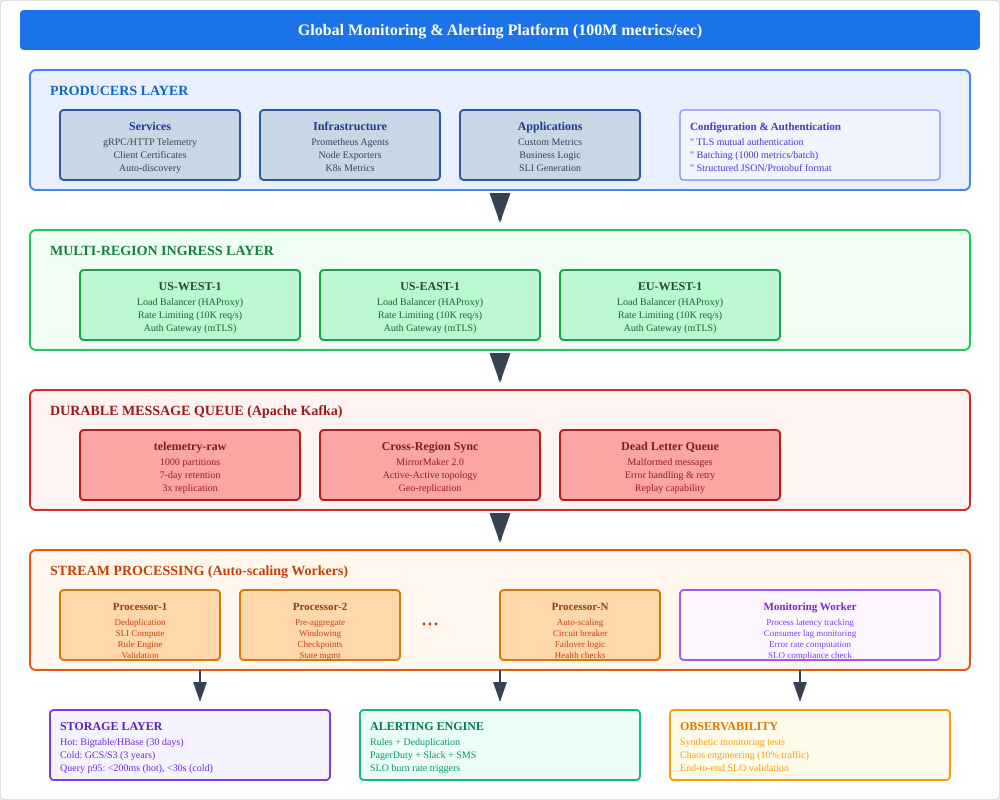
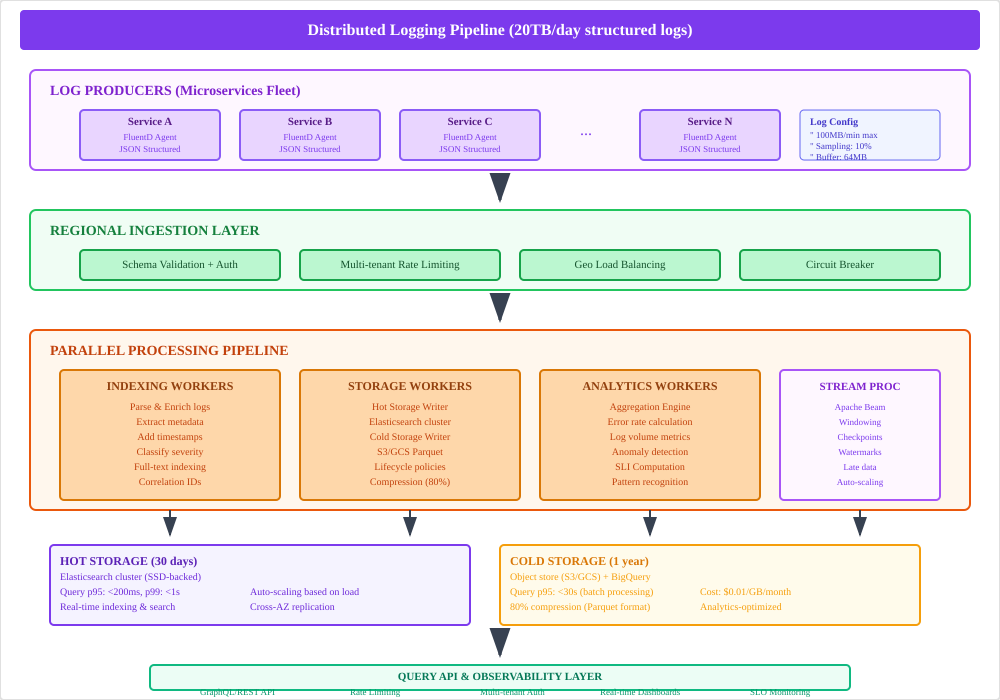
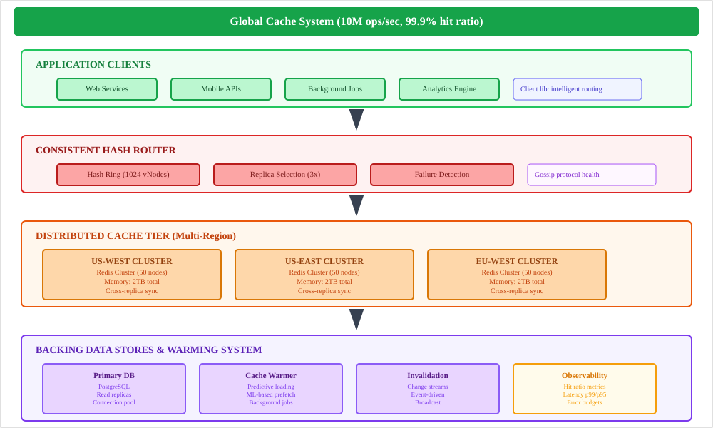
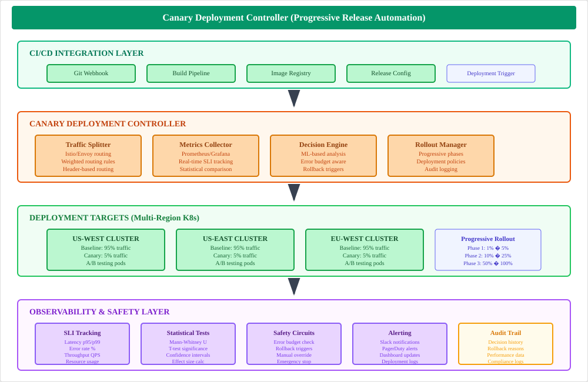
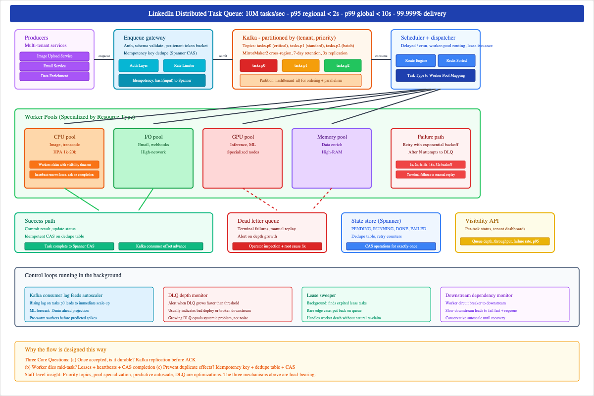
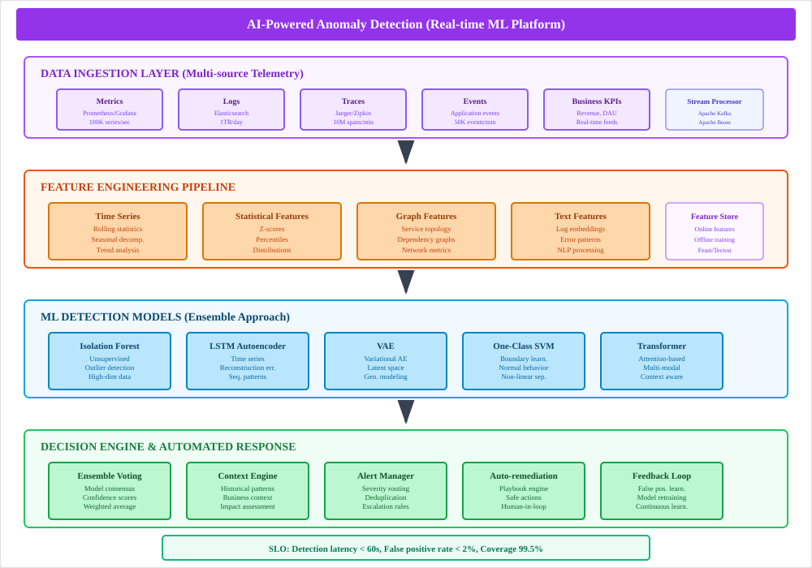
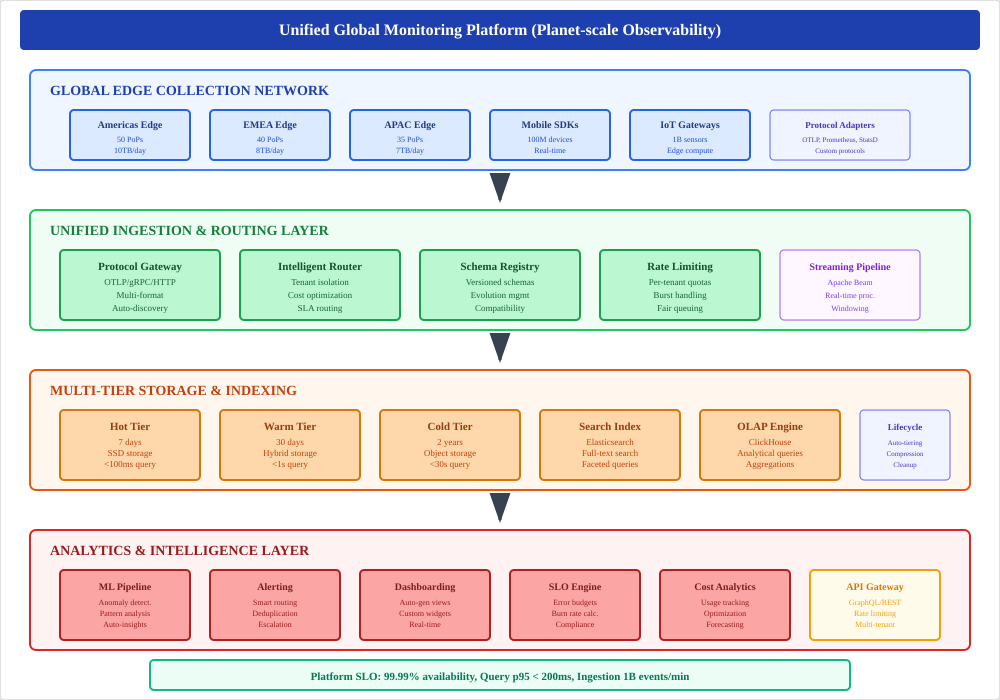

Complete preparation guide with 9 authentic problems from Google's Site Reliability Engineering interviews
This is often the most decisive round in the Google SRE loop, separating strong engineers from true SRE architects. Unlike a standard software engineering design interview that focuses on features and scale, the SRE version is a deep probe into reliability, observability, and operational maturity.
The interviewer isn't just asking "How would you build it?" They are asking, "How would you build it to survive its worst day, and how would you prove it's meeting its promises?"
Expect a dialogue, not a monologue. The goal isn't to draw a perfect diagram, but to narrate your architectural choices and justify them with production-grade reliability principles.
"How reliable, fast, and scalable must this system be?"
"What minimal set of components meets those guarantees?"
"What happens when scale ×10 or a dependency fails?"
"Which reliability patterns mitigate failure modes?"
"How will we know it's healthy—and repair it safely?"
"Where do we accept cost or complexity to meet SLOs?"
You're asked to design a global monitoring & alerting platform for an organization that runs hundreds of services across multiple regions.
Goal: "Build something like Google's Stackdriver Logging or Cloud Logging service — reliable, fast, and cost-efficient."
"Before architecture, let's define the SLOs that will guide design tradeoffs. For this monitoring pipeline I propose:"
| SLI | Target | Measurement |
|---|---|---|
| SLI A (Alert latency) | p99 ≤ 30 seconds | End-to-end from metric ingestion → alert notification |
| SLI B (Pipeline availability) | ≥ 99.95% monthly | Ingestion & processing pipeline available |
| SLI C (Alert precision) | < 2% false positive rate | For critical alerts |
"Do these targets reflect expectations?"
Interviewer: "Yes — those are reasonable targets."
Declaring SLOs first reframes every decision: buffering, batching, retry, sampling, redundancy — all are justified by meeting these measurable targets.
Data flow: producers → ingest → durable queue → processing → TSDB + alert evaluation → notifications.
This baseline meets functionality in an ideal world; no resilience or scale pressure yet.
Candidate:
Candidate:
Candidate:
Candidate:
Each defense tied back to SLOs: latency (ingest+batches), availability (multi-region), precision (dedupe, DLQ).
Always quantify: when you propose sampling or aggregation, state the expected reduction in ingest QPS (e.g., "apply 10x downsampling on low-cardinality metrics; reduces ingestion from 100M → 10M QPS"). Interviewers love concrete numbers.

| Component | Technology Choice | Scaling Strategy | Failure Mode Mitigation |
|---|---|---|---|
| API Gateway | Envoy/NGINX with rate limiting | Autoscaling groups per region | Circuit breakers, health checks |
| Message Queue | Kafka with MirrorMaker 2.0 | Dynamic partition scaling | Cross-region replication, DLQ |
| Stream Processors | Apache Beam/Dataflow | Horizontal autoscaling | Checkpointing, replay capability |
| Hot Storage | Bigtable/DynamoDB | Automatic sharding | Multi-region replication |
| Alert Engine | Custom Go/Java service | Stateless, load balanced | Rule versioning, canary deployment |
Design a global distributed logging system for thousands of services generating logs at massive scale.
Goal: "Build something like Google's Stackdriver Logging or Cloud Logging service — reliable, fast, and cost-efficient."
| SLI | Target | Measurement |
|---|---|---|
| SLI A – Ingestion Latency | p99 ≤ 10 seconds | Time from log emission → durable write |
| SLI B – Query Freshness | ≤ 60 seconds | Logs visible for querying post-ingest |
| SLI C – Pipeline Availability | ≥ 99.95% monthly | Multi-region uptime |
| SLI D – Storage Durability | ≥ 99.999999999% | (11 9s) object durability (hot+cold tiers) |
This "SLO-first" framing is the senior signal. The candidate isn't designing a system; they're defining what success means for reliability before designing anything.
Happy Path: Logs flow in, persist durably, index, and become queryable within seconds. No failures yet — only correctness and latency considered.
Interviewer: "That works at 2M logs/sec. What if it's 20M?"
Candidate:
"I'd define sampling rules: critical severity always stored, info/debug rate-limited."
Interviewer: "Storing raw logs for a year is expensive — how do you balance cost vs durability?"
Candidate:
"That's the sweet spot: cost down, SLOs preserved for query freshness and durability."
Whenever you mention "durable queues," emphasize backpressure. Google interviewers love hearing: "We protect downstream systems by applying backpressure instead of uncontrolled retries."

| Component | Technology Choice | Scaling Strategy | Cost Optimization |
|---|---|---|---|
| Log Agents | Fluent Bit/Vector | Per-node deployment | Local buffering + compression |
| Stream Store | Kafka/Pulsar | Auto-partition scaling | Tiered storage (hot/warm/cold) |
| Hot Storage | Elasticsearch/OpenSearch | Shard rebalancing | Index lifecycle management |
| Cold Storage | S3/GCS with Parquet | Unlimited capacity | 80-90% compression + lifecycle |
| Query Engine | GraphQL + caching | Read replicas | Query result caching |
You're designing a global distributed cache that serves user profile and session data to latency-sensitive applications across multiple regions.
Goal: "Design something like Google's Memcache/Spanner hybrid caching tier — low latency, reliable, globally aware."
| Metric | Target |
|---|---|
| SLI A – Read Latency | p99 < 5ms from regional cache |
| SLI B – Global Write Propagation | ≤ 1s to all regions |
| SLI C – Availability | ≥ 99.99% read path uptime |
| SLI D – Hit Ratio | ≥ 95% sustained |
| SLI E – Data Integrity | < 0.001% stale-read beyond SLO window |
| SLI F – Cost Efficiency | ≤ $0.05 per million reads (example target) |
Defining these numbers first is the "Google move." The conversation now has measurable targets: latency, staleness, availability and even cost.
| Layer | Key Responsibilities | Reliability Pattern |
|---|---|---|
| Ingestion Tier | Multi-region API front-ends | Active-active load balancing |
| Queue Layer | Buffering & prioritization | Replicated Kafka clusters with MirrorMaker |
| Deduplication & Aggregation | Collapses repeated alerts | Sliding-window hashing + in-memory cache |
| Notification Service | Multi-channel dispatch | Circuit breakers & multi-path delivery |
| Ack Tracker DB | State management | Multi-primary Spanner/Cloud SQL HA |
| Monitoring & SLIs | End-to-end delivery metrics | Synthetic alert tests every minute |
| Decision | Reliability | Latency | Complexity | Cost | Reason |
|---|---|---|---|---|---|
| Active-active ingestion | 99.999% | < 30s | High | High | Ensures no regional SPOF |
| Dedup in memory | High | 10ms avg | Medium | Low | Prevents paging storms |
| Multi-channel notify | 99.999% | Slightly slower | Medium | Medium | Eliminates alert loss |
| Global ACK sync | High | 10s | Medium | Medium | Maintains auditability |

| Component | Technology Choice | Scaling Strategy | Consistency Model |
|---|---|---|---|
| Cache Engine | Redis Cluster/Memcached | Horizontal sharding | Eventually consistent |
| Proxy Layer | Envoy/HAProxy | Autoscaling groups | Session affinity |
| Coordination | Kafka + Custom Service | Multi-region brokers | Async replication |
| DB Fallback | PostgreSQL/Spanner | Read replicas | Strong consistency |
| Warming System | ML Pipeline + Workers | Batch processing | Best-effort |
Goal: "Think of something like Google's internal Alertmanager + PagerDuty hybrid — ultra-reliable and globally consistent."
| SLI / Metric | Target |
|---|---|
| Alert Delivery Latency | p99 < 30s |
| Alert Delivery Reliability | ≥ 99.999% ("five nines") |
| Deduplication Accuracy | ≥ 99.5% identical-alert collapse |
| Acknowledgment Propagation Delay | ≤ 10s global sync |
| System Availability | ≥ 99.99% |
Interviewer: "Your deduplication handles identical alerts perfectly. But in a real outage, we don't get 10,000 identical alerts; we get 10,000 related but different alerts. For example, 'Database CPU high,' 'Query latency p99 high,' and 'API error rate high' for the same service. How would you handle this 'pattern collapse'?"
Candidate (Staff-Level Response):
"This requires moving beyond simple fingerprinting to semantic grouping. I'd introduce a causality engine or alert correlation service as a new layer in our pipeline. It would work in three steps:
This is next-level thinking. The candidate is no longer just processing alerts; they are interpreting them. By designing a system that reduces the cognitive load on the on-call engineer, they are demonstrating a deep empathy for operations and a proactive approach to incident management. This is a core trait of SRE leadership at Google.
| Component | Technology Choice | Scaling Strategy | Failure Mitigation |
|---|---|---|---|
| Alert Gateway | Go/Java microservices | Autoscaling groups | Circuit breakers, health checks |
| Message Queue | Kafka with Schema Registry | Dynamic partitioning | Multi-region replication |
| Processing Engine | Apache Flink/Beam | Stream processing | Checkpointing, exactly-once |
| Correlation Service | Graph DB + ML Pipeline | Horizontal scaling | Cached dependency graphs |
| State Store | Spanner/CockroachDB | Global distribution | Multi-primary consistency |
Google teams track SLOs (Service Level Objectives) to measure reliability and manage error budgets. You're asked to design a system that:
Essentially: "Build the backend brain of Google's reliability measurement stack — the system that decides when a service is burning through its reliability budget."
| SLI / Metric | Target |
|---|---|
| SLO computation latency | < 60s p95 |
| Computation accuracy | ≥ 99.99% data consistency |
| System availability | 99.99% |
| Error budget alert delay | < 5 min |
They've not only defined SLOs for the services being tracked but also for the tracker itself — a subtle, senior-level move.
| Component | Tech / Pattern | SLO Benefit |
|---|---|---|
| Data Ingestion | Kafka + Pub/Sub + Checkpointing | Reliable stream processing |
| Compute Engine | Apache Beam / Dataflow | Low-latency, fault-tolerant aggregation |
| Alert Engine | Bigtable for rolling windows + Spanner for SLO configs | Burn-rate rule evaluation + deduplication |
| API / UI | Serves aggregated SLO state with filters | Transparency / observability |
For the System: "An SLO system is only useful if its own SLOs are measurable and reliable. Instrument the tracker as ruthlessly as you would a user-facing service."
For the Business: "An SLO system's ultimate purpose is to serve as a data-driven contract between product and reliability. When the error budget is green, product teams have the explicit freedom to launch features and take risks. When the budget turns red, the contract dictates that engineering effort must pivot to reliability work. This tracker isn't just for alerts; it's for automating strategic decision-making."
| Component | Technology Choice | Scaling Strategy | Consistency Model |
|---|---|---|---|
| Stream Processing | Apache Beam/Dataflow | Auto-scaling workers | Exactly-once processing |
| Time-Series Storage | Bigtable/DynamoDB | Automatic sharding | Strong consistency |
| Configuration Store | Spanner/etcd | Global replication | Strong consistency |
| API Layer | GraphQL + REST | Horizontal scaling | Read replicas |
| Dashboard | React + WebSocket | CDN distribution | Eventually consistent |
Google wants a system that safely deploys new service versions globally with minimal risk. Your task: design a Canary Deployment Controller that can:
Goal: "Build the control brain that decides whether a release is healthy enough to go 100%."
| SLI / Metric | Target |
|---|---|
| Deployment failure detection latency | < 60s p95 |
| Rollback success rate | 99.99% |
| Promotion decision accuracy (false positive rate) | < 0.1% |
| Controller availability | 99.99% |
| Canary vs. Baseline metric parity | ± 5% tolerance |
Starting with SLOs for the deployment system itself shows real Google DNA — reliability as a product, not an afterthought.
"The Decision Module would be more sophisticated than simple thresholds. It would be error-budget-aware. A deployment would only be allowed to proceed if the service's current error budget for the quarter is healthy. If a canary deployment starts burning the error budget at an accelerated rate (e.g., 5% of the monthly budget in one hour), the controller would trigger an automatic rollback, even if no single metric has crossed a hard red line. This aligns our release velocity directly with user-facing reliability."
"A canary controller is not a deployment tool — it's a risk management system with code as the interface."

| Component | Technology Choice | Scaling Strategy | Reliability Pattern |
|---|---|---|---|
| Traffic Splitter | Istio/Envoy service mesh | Per-cluster configuration | Progressive percentage rollout (1% → 5% → 25% → 100%) |
| Metrics Collection | Prometheus + Grafana | Federated monitoring | Real-time SLI comparison with statistical significance |
| Decision Engine | ML model (Random Forest) | Ensemble voting | Error budget aware + Mann-Whitney U test |
| Rollback System | Kubernetes native APIs | Instant pod replacement | Circuit breaker pattern with manual override |
| Audit Trail | Event sourcing to Kafka | Immutable log storage | Complete deployment decision history |
Multi-Signal Analysis: The decision engine doesn't rely on single metrics. It performs correlation analysis across latency (p50, p95, p99), error rates (4xx, 5xx), throughput (QPS), and resource utilization (CPU, memory). The system uses a weighted ensemble approach where each signal contributes to a confidence score.
Error Budget Integration: Before any deployment proceeds beyond 5% traffic, the controller checks the service's current error budget consumption. If the monthly budget is >80% consumed, the controller automatically applies stricter thresholds and shorter observation windows. This prevents deployments from exhausting error budgets during already-stressed periods.
Design a global distributed task queue used by multiple teams for background processing (jobs like image processing, email sending, data enrichment).
| Metric | Target |
|---|---|
| Enqueue → Start Latency (regional) | p95 ≤ 2s |
| Enqueue → Start Latency (global) | p99 ≤ 10s |
| Delivery Reliability | ≥ 99.999% (at-least-once delivered or moved to DLQ) |
| Task visibility latency | p95 ≤ 5s (status updates) |
| Queue availability | 99.99% |
Interviewer: "Some tasks need exactly-once delivery. How do you support that?"
Candidate:

| Component | Technology Choice | Scaling Strategy | Reliability Pattern |
|---|---|---|---|
| Queue Management | Apache Kafka (partitioned topics) | Horizontal partition scaling | Multi-level priority with SLA-based routing |
| Worker Pools | Kubernetes Jobs + HPA | Auto-scaling (1K-20K instances) | Specialized pools: CPU/IO/GPU/Memory workers |
| Task Scheduling | Custom scheduler + Redis | Distributed consensus | Delayed execution with cron-like patterns |
| State Management | PostgreSQL + S3/GCS | Read replicas + sharding | Task state tracking with retry policies |
| Rate Limiting | Token bucket (Redis) | Per-tenant quotas | Fair queuing with sliding windows |
Step 1-3: Producer → Gateway → Kafka: The LinkedIn image-upload service enqueues a thumbnail generation task with payload, tenant ID, priority class, and idempotency key (hash of input). The gateway performs authentication, schema validation, per-tenant token bucket checking, and crucially, a Spanner CAS operation: "insert this key if it doesn't exist." If the key exists, return the original task ID (preventing duplicate tasks from retries). Task lands in the appropriate Kafka topic (tasks.p0/p1/p2) partitioned by hash(tenant_id) for ordering within tenant while spreading tenants across partitions for parallelism.
Step 4-6: Scheduler → Worker Claims → Completion: Stateless scheduler workers consume from Kafka and route tasks based on type: image_resize → CPU pool, send_email → I/O pool, run_inference → GPU pool. Workers claim tasks with leases (30s validity, 10s heartbeat renewal) rather than locks. No distributed lock manager prevents split-brain scenarios. Worker completion requires a conditional write to Spanner: "mark task=DONE only if status=RUNNING and my lease is valid." This CAS operation ensures exactly-once semantics - if the lease expired and another worker completed the task, the second worker's write fails harmlessly.
Step 7: Failure Paths & Control Loops: Worker crashes result in lease expiration and automatic task re-claiming by other workers. Task failures trigger exponential backoff requeuing (1s, 2s, 4s, 8s, 16s, 32s) with terminal failure after N retries moving tasks to DLQ. Background control loops include Kafka consumer lag feeding autoscalers, ML forecasting for 15-minute ahead capacity pre-warming, DLQ depth monitoring for systemic issues, and lease sweepers for edge case cleanup. Circuit breakers to downstream dependencies prevent cascading failures by failing fast and requeuing with backoff.
Your mission: design an AI-driven anomaly detection platform that continuously monitors SLO metrics across thousands of services and automatically detects, classifies, and prioritizes anomalies before they cause SLO breaches.
Goal: "Build the system that catches an outage before your pager does."
| Metric | Target |
|---|---|
| Detection latency | p95 ≤ 2 min |
| False positive rate | ≤ 1% |
| False negative rate | ≤ 2% |
| System uptime | ≥ 99.99% |
| Detection coverage (monitored SLIs) | ≥ 95% of SLO metrics |
The best candidates define SLOs for the AI system itself. That's the meta-signal of an SRE mindset — ML is a component of reliability, not an exception to it.
"In SRE, an ML detector is just another production system. Monitor it, canary it, and page it when it drifts. Its most important SLI is the trust of the on-call engineer."

| Component | Technology Choice | Scaling Strategy | Reliability Pattern |
|---|---|---|---|
| Feature Engineering | Apache Beam + Feature Store | Stream processing pipelines | Time series, statistical, graph, and text features |
| ML Models | Ensemble: Isolation Forest, LSTM-AE, VAE, One-Class SVM, Transformer | Model parallelization | Consensus voting with confidence scoring |
| Decision Engine | Custom inference service | Auto-scaling containers | Context-aware alerting with business impact assessment |
| Response System | Playbook automation + Human-in-loop | Graduated automation | Safe automated actions with manual override capability |
| Feedback Loop | Online learning + Model retraining | Continuous deployment | False positive learning with human feedback integration |
Ensemble Approach: No single model can detect all anomaly types. The system uses Isolation Forest for high-dimensional outliers, LSTM Autoencoders for temporal sequences, VAEs for generative modeling, One-Class SVMs for boundary learning, and Transformers for multi-modal contexts. Each model votes on anomaly probability with confidence weighting.
Continuous Learning: The system maintains a feedback loop where human operators can mark false positives/negatives. This feedback is used for online learning to adjust model weights and retrain models. A/B testing ensures new model versions improve performance before full deployment, treating the ML system like any other production service.
Design the ultimate unified monitoring platform that Google would use internally — a system that combines metrics, logs, traces, and events from across the entire Google ecosystem into a single pane of glass.
Goal: "Build the monitoring system that monitors all of Google's other monitoring systems."
| SLI / Metric | Target |
|---|---|
| Platform availability | 99.99% (< 4.4 min downtime/month) |
| Query latency (dashboards) | p95 < 200ms, p99 < 1s |
| Data ingestion rate | 1B events/min sustained, 5B burst |
| Data freshness | p95 < 30s from edge to queryable |
| Storage cost efficiency | 80% compression ratio, 95% automated tiering |

| Component | Technology Choice | Scaling Strategy | Reliability Pattern |
|---|---|---|---|
| Global Edge Network | Custom edge collectors + Envoy | 150+ PoPs worldwide | Protocol adaptation with intelligent routing |
| Unified Ingestion | Apache Beam + Schema Registry | Auto-scaling pipelines | Multi-format support with tenant isolation |
| Multi-Tier Storage | Hot(SSD)/Warm(Hybrid)/Cold(Object) | Automated lifecycle management | Query performance vs cost optimization |
| Query Engine | Custom OLAP + ClickHouse + Elasticsearch | Federated query routing | Unified API with intelligent data correlation |
| Intelligence Layer | ML anomaly detection + Cost analytics | Real-time processing | Automated insights and cost optimization |
Intelligent Data Correlation: The platform doesn't just store different data types separately. It uses ML models to automatically correlate metrics spikes with log error patterns, trace bottlenecks with resource utilization, and business events with technical incidents. This creates a unified view where engineers can start with any signal and discover related context across all data types.
Adaptive Cost Optimization: The system continuously analyzes query patterns, data access frequencies, and business value to optimize storage tiers and retention policies. High-value, frequently-accessed data stays in hot storage, while automated ML models predict when data can be safely moved to cheaper cold storage without impacting user experience.
| Prompt # | Design Challenge | Core SLOs / Targets | Key Components & Reliability Patterns | Unique Learning Hook |
|---|---|---|---|---|
| 1 | Monitoring & Alerting Platform | p99 alert latency < 30s, 99.999% reliability | Multi-region ingestion, deduplication, multi-channel notification | "Reliability is a spec" — alert systems themselves have SLOs |
| 2 | Distributed Logging Pipeline | p99 ingest < 5s, 99.99% delivery | Sharded queues, backpressure, DLQ, cold-storage indexing | Cost–reliability trade-off, streaming backpressure logic |
| 3 | Distributed Cache (Global Scale) | p95 read < 10ms, p99 availability 99.99% | Sharding, consistent hashing, replication, TTL eviction | Balancing latency vs. consistency under failure |
| 4 | Global Incident Response System | p99 alert ≤ 30s, 5-nines reliability | Dedup, geo-failover, multi-channel escalation, ACK tracking | Human-in-the-loop reliability — the pager has an SLO |
| 5 | SLO Error Budget Tracker | < 1 min compute latency, 99.99% accuracy | Stream aggregation, burn-rate calculation, SLO config registry | Operationalizes SRE Book Chapter 4 — reliability math as service |
| 6 | Canary Deployment Controller | Rollback < 2 min, promotion accuracy > 99.9% | Progressive rollout, metrics-based decisioning, rollback journal | "Deployment = reliability event" — ML + SLO-based release safety |
| 7 | Distributed Task Queue | p95 enqueue→start < 2s, 99.999% delivery | Sharded brokers, retry + DLQ, idempotency keys | Classic "reliability vs throughput" design under concurrency |
| 8 | Anomaly Detection System (AI-Infused) | p95 detect latency < 2 min, FP ≤ 1% | Streaming ML inference, ensemble detection, feedback loop | Modern trend: ML reliability measured like any other service |
| 9 | Unified Global Monitoring Platform | 1B events/min ingestion, query p95 < 200ms, 99.99% availability | Global edge network, multi-tier storage, unified API, intelligent correlation | "Monitor the monitor" — planet-scale observability with adaptive cost optimization |
Each prompt follows the 7-Step "Undefeatable Blueprint," blending:
By the end of this section, you don't just know how to design systems — you know how to think like a Google SRE.